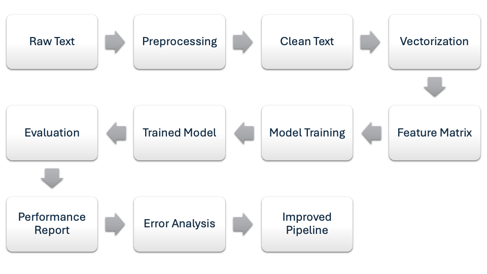
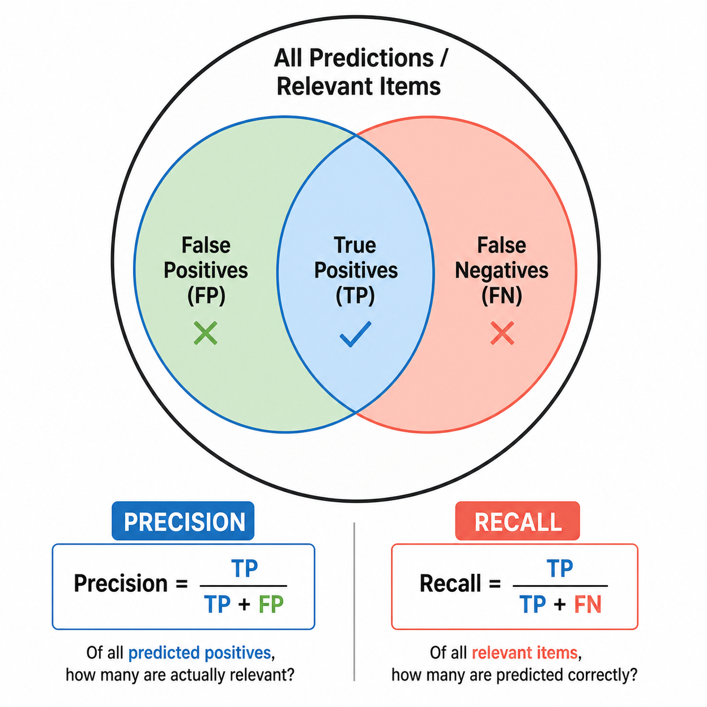

Remark
These lecture notes are in early access and will continue to evolve based on classroom experience and feedback.
3.1. Text Classification: Problem Framing and Pipeline Design#
Section Goal
By the end of this section you will understand how to frame any text labeling problem as a supervised classification task, how to assemble a systematic end-to-end pipeline, and how to choose metrics that give an honest picture of model performance — especially when classes are imbalanced.
3.1.1. Learning objectives#
By the end of this section, you should be able to:
Define text classification and give examples of binary, multi-class, and multi-label variants.
List the main stages of a supervised text classification pipeline and explain the role of each stage.
Compute and interpret common evaluation metrics — accuracy, precision, recall, F1, ROC AUC — from a confusion matrix.
Explain why accuracy is a poor metric for imbalanced datasets and identify better alternatives.
Describe common benchmark datasets used to develop and test text classifiers.
3.1.2. Motivating example: automating customer feedback triage#
Imagine you work for a large e-commerce company that receives thousands of customer messages every day. Messages arrive mixed together: some are complaints about late deliveries, some ask about return policies, some are billing disputes, and some are generic praise. A human team cannot read every message in real time and route it to the right department.
Text classification solves this directly: train a model to read each message and assign it a category — delivery issue, returns, billing, compliment, other — so the correct team is notified immediately.
This example illustrates the three things you always need to frame a classification problem:
A corpus of input texts (the customer messages).
A set of discrete categories (the department labels).
Ground-truth labels for training (messages that human agents have already categorized).
Once these three elements are in place, the pipeline described below applies regardless of the domain.
3.1.3. What is text classification?#
Text classification (also called text categorization) is the task of assigning one or more predefined labels to a piece of text — a document, a sentence, or a fragment — based on its content. It is arguably the most common NLP task in industry and research, appearing in:
Sentiment analysis: labeling a product review as positive or negative.
Topic categorization: tagging a news article with one or more subject areas (e.g., politics, sports, technology).
Spam detection: classifying email as spam or not spam.
Intent detection: determining what a user wants in a conversational system (e.g., “book a flight”, “check weather”).
Relevance filtering: deciding whether a document is relevant to a query or domain (as in the economic news task we study in Section 2).
Medical triage: routing patient records or clinical notes to appropriate care pathways.
Hate speech and content moderation: flagging text that violates community guidelines.
Language identification: determining which language a document is written in.
Formally, given an input text \(x\) and a set of classes \(\mathcal{C} = \{c_1, c_2, \ldots, c_k\}\), the goal is to learn a function \(f: x \mapsto c_i\) that generalizes well to unseen documents.
3.1.3.1. Problem variants#
Variant |
Description |
Example |
|---|---|---|
Binary (\(k = 2\)) |
Each document receives exactly one of two labels |
Spam vs. not spam |
Multi-class (\(k > 2\)) |
Each document receives exactly one of \(k > 2\) labels |
News topic: politics / sports / technology / … |
Multi-label |
Each document may receive zero or more labels simultaneously |
A tweet tagged as both politics and humor |
Ordinal |
Labels have a natural order |
Star rating: 1 ★ through 5 ★ |
Most pipeline components described below apply to all four variants. The primary differences lie in the loss function used during training and the evaluation metrics chosen.
Multi-label vs. multi-class
These two terms are often confused:
Multi-class: one document, one label, but the label is chosen from more than two options (e.g., a news article is either politics, sports, or technology — not two of those at once).
Multi-label: one document, potentially many labels simultaneously (e.g., a research paper can be tagged as both machine learning and natural language processing).
In scikit-learn, multi-class classifiers such as LogisticRegression handle the multi-class case automatically. Multi-label classification requires either a separate binary classifier per label (OneVsRestClassifier) or a purpose-built multi-label model.
3.1.4. The standard pipeline#
A supervised text classification system is built from a sequence of well-defined stages. Think of the pipeline as an assembly line: each stage transforms the data into a form the next stage can use.
{kind=link}

Fig. 3.1 Supervised text classification pipeline.#
3.1.4.1. Stage 1 — Data acquisition and labeling#
Obtain a corpus of text documents together with ground-truth labels. Labels may come from:
Human annotation: crowdsourcing platforms (e.g., Figure Eight, Amazon MTurk) or domain experts.
Implicit signals: user behavior (clicks, purchases, complaints filed) used as weak labels.
Programmatic heuristics: rule-based patterns that assign labels automatically (with some noise).
Example
For a movie review sentiment classifier, labels could come from star ratings: reviews with 4–5 stars are labeled positive, and those with 1–2 stars are labeled negative.
Key considerations at this stage: sufficient dataset size, representative sampling across all classes, and inter-annotator agreement for human-labeled data. Inter-annotator agreement measures how consistently different human raters assign the same label to the same document; Cohen’s kappa is the most common metric.
3.1.4.2. Stage 2 — Text preprocessing#
Clean and normalize the raw text to reduce noise and vocabulary size. Common operations include:
Lowercasing all tokens.
Removing HTML markup, URLs, and boilerplate text.
Stripping punctuation and digits (or retaining them if they carry meaning).
Removing stopwords (very common words like the, is, at that rarely help classification).
Stemming or lemmatization to collapse morphological variants (e.g., running → run).
Example
The raw review text "<br />Absolutely LOVED this film!! 10/10" becomes loved film after stripping HTML tags, lowercasing, removing punctuation and digits, and dropping stopwords.
Which operations to apply depends on the task. For sentiment analysis, exclamation marks and capitalization can signal intensity, so you might keep them. For topic classification, they are usually noise.
3.1.4.3. Stage 3 — Feature extraction (vectorization)#
Convert the cleaned text into a numerical representation that a machine learning algorithm can process. Common choices include (in order of increasing complexity):
Bag-of-words / TF–IDF (Chapter 2): sparse vectors counting word occurrences, optionally reweighted by inverse document frequency.
Pre-trained word embeddings (this chapter, Section 3): dense 300-dimensional vectors averaged over words.
Document embeddings (this chapter, Section 4): a single dense vector learned jointly for each document.
Contextual representations from BERT-style models (this chapter, Section 5): vectors that change based on a word’s context in a sentence.
A guiding principle: start simple. A TF–IDF + logistic regression baseline is fast to build, easy to interpret, and often surprisingly competitive. Only move to more complex representations when you have a clear performance gap to close.
3.1.4.4. Stage 4 — Model training#
Fit a supervised model using the numerical features and ground-truth labels. The training set is used to adjust model parameters; the validation set is used to tune hyperparameters (e.g., regularization strength, number of layers). The test set is held out until the very end to estimate generalization performance.
Common models for text classification:
Model |
Strengths |
Typical use case |
|---|---|---|
Naive Bayes |
Very fast, works well with small data |
Spam filtering, quick baselines |
Logistic Regression |
Interpretable, handles imbalance via class weighting |
General-purpose baseline |
LinearSVC |
Fast, strong on high-dimensional sparse data |
TF–IDF features |
Random Forest |
Robust, little tuning needed |
Mixed feature types |
CNN / LSTM |
Captures local / sequential patterns |
Sentence-level tasks |
Fine-tuned BERT |
State-of-the-art performance |
When compute budget allows |
3.1.4.5. Stage 5 — Evaluation#
Measure generalization on the held-out test set. Report multiple metrics (see the next subsection) rather than relying on a single number.
3.1.4.6. Stage 6 — Error analysis and iteration#
Inspect misclassified examples. Common patterns to look for:
Systematic errors: the model consistently confuses two particular classes (e.g., fear vs. sadness). This may indicate overlapping vocabulary or insufficient training examples.
Label noise: some “true” labels are actually wrong, causing the model to learn conflicting signals.
Domain mismatch: test examples come from a distribution not well represented in training.
Error analysis guides targeted improvements: collecting more data for weak classes, adding features, or adjusting the preprocessing strategy.
3.1.4.7. A minimal scikit-learn pipeline#
The Pipeline object from scikit-learn chains preprocessing and modeling steps, making it easy to swap out components and avoid data leakage between training and test sets.
The ngram_range=(1, 2) argument instructs the vectorizer to include both individual words (unigrams) and consecutive word pairs (bigrams) as features. Bigrams help capture phrases like “not good” that a unigram model would misrepresent.
What is an n-gram?
An n-gram is a contiguous sequence of \(n\) tokens from a text. The most common types are:
Unigram (\(n=1\)): individual words — “not”, “good”
Bigram (\(n=2\)): consecutive word pairs — “not good”, “very fast”
Trigram (\(n=3\)): consecutive triples — “not very good”
Using bigrams alongside unigrams allows the classifier to treat “not good” as a distinct feature rather than treating “not” and “good” independently — which is crucial for negation-sensitive tasks like sentiment analysis.
3.1.5. Evaluation metrics#
Choosing the right metric is as important as choosing the right model. The primary metrics for text classification are:
3.1.5.1. Accuracy#
The fraction of correctly labeled documents:
Straightforward but misleading on imbalanced datasets. Consider a fraud-detection classifier where only 1% of transactions are fraudulent. A model that always predicts “not fraud” achieves 99% accuracy while being completely useless. Never report accuracy alone on an imbalanced dataset.
3.1.5.2. Precision, Recall, and F1#
These three metrics are defined per class and jointly characterize the quality of predictions for that class. For a binary problem with positive class \(P\) [Van Rijsbergen, 1979]:
where \(TP\) = true positives, \(FP\) = false positives, \(FN\) = false negatives, \(TN\) = true negatives.
{kind=link}

Fig. 3.2 A minimalist diagram illustrating precision and recall as overlaps among true positives, false positives, and false negatives.#
Example
Suppose a spam filter is tested on 100 emails: 10 are spam and 90 are legitimate.
Predicted Spam |
Predicted Legitimate |
|
|---|---|---|
Actual Spam |
7 (TP) |
3 (FN) |
Actual Legitimate |
5 (FP) |
85 (TN) |
High precision means few legitimate emails are incorrectly blocked. High recall means few spam emails slip through. The F1 score balances both. The appropriate trade-off depends on the application: a spam filter should prioritize precision (don’t block legitimate mail), while a fraud detector should prioritize recall (don’t miss fraud).
Intuition for precision and recall
Think of it this way:
Precision answers: “Of all the documents I flagged as positive, what fraction were truly positive?” It measures how careful your model is — whether its alarms are trustworthy.
Recall answers: “Of all the truly positive documents, what fraction did I catch?” It measures how thorough your model is — whether it misses real positives.
A model that always predicts “positive” has perfect recall (catches everything) but terrible precision (many false alarms). A model that only predicts “positive” when it is very confident has high precision but low recall (misses many true positives).
For multi-class problems, scikit-learn computes per-class precision, recall, and F1, then aggregates them in two ways:
Macro average: mean over all classes (treats every class equally, regardless of size).
Weighted average: mean weighted by class support (gives more weight to frequent classes).
When your dataset is imbalanced, these two averages can diverge substantially. A macro F1 of 0.50 and a weighted F1 of 0.75 would indicate that the model performs well on the large classes but poorly on the small ones.
3.1.5.3. ROC AUC#
The Receiver Operating Characteristic (ROC) curve plots the true positive rate (recall) against the false positive rate as the classification threshold varies. The Area Under the Curve (AUC) summarizes this curve in a single number between 0 and 1. An AUC of 0.5 corresponds to random guessing; AUC of 1.0 is a perfect classifier.
ROC AUC is particularly useful because it is threshold-independent: it measures the model’s ability to rank positive examples above negative ones, regardless of where you set the decision boundary. This makes it a reliable metric for comparing models even on imbalanced datasets.
3.1.5.4. Confusion matrix#
A \(k \times k\) table where entry \((i, j)\) is the number of documents truly in class \(i\) that were predicted as class \(j\). The diagonal contains correct predictions; off-diagonal cells reveal specific error patterns.
The confusion matrix is the single most informative diagnostic tool for understanding where a classifier makes mistakes, especially in multi-class settings.
3.1.5.5. Choosing the right metric#
Situation |
Recommended metric(s) |
|---|---|
Balanced classes, interpretability needed |
Accuracy + Confusion matrix |
Imbalanced classes |
F1 (macro or weighted) + ROC AUC |
Threshold matters (e.g., fixed cutoff) |
Precision + Recall at threshold |
Ranking matters (e.g., info retrieval) |
ROC AUC, Average Precision |
Multi-label classification |
Per-label F1, Hamming loss |
3.1.6. Common benchmarks#
Several publicly available datasets serve as standard touchstones for text classification research. Evaluating your system on established benchmarks lets you compare against the published literature.
Dataset |
Task |
Classes |
Size |
Notes |
|---|---|---|---|---|
IMDB Large Movie Reviews |
Sentiment analysis |
2 |
50,000 |
Balanced; long documents |
SST-2 |
Sentiment analysis |
2 |
~67,000 |
Sentence-level; part of GLUE |
20 Newsgroups |
Topic classification |
20 |
~20,000 |
Classic; high-dimensional vocabulary |
AG News |
News topic classification |
4 |
~120,000 |
Balanced; short documents |
Economic News |
Relevance filtering |
2 |
~8,000 |
Imbalanced (~82:18) |
dair-ai/emotion |
Emotion classification |
6 |
~416,000 |
Heavily imbalanced |
DBpedia |
Ontology classification |
14 |
~630,000 |
Wikipedia-based |
Yelp Polarity |
Sentiment analysis |
2 |
560,000 |
Consumer reviews |
3.1.7. Data splits and cross-validation#
Before running any experiment, divide your data into three non-overlapping subsets:
Training set (~70–80%): used to fit model parameters.
Validation set (~10–15%): used to tune hyperparameters without contaminating the test set.
Test set (~10–20%): used only once at the end to report final performance.
When data is scarce, use k-fold cross-validation on the training set instead of a fixed validation split. In k-fold cross-validation, the training set is divided into \(k\) equal folds; the model is trained on \(k-1\) folds and evaluated on the remaining fold, rotating which fold is held out. The \(k\) evaluation scores are averaged to give a more stable estimate of generalization performance than a single split.
Data Leakage Warning
A pipeline step that is “fitted” on data (e.g., a TF–IDF vectorizer building its vocabulary) must be fitted only on training data and then applied to validation and test data. Fitting on the full dataset — including test examples — is called data leakage and produces optimistically biased evaluation results. Scikit-learn’s Pipeline object prevents this automatically when used correctly.
Common leakage mistakes:
Fitting a
TfidfVectorizerorStandardScaleron the entire dataset before splitting.Using test-set information to choose preprocessing parameters (e.g., vocabulary size).
Reporting performance on the same split used to select hyperparameters.
3.1.8. Key takeaways#
Summary
Text classification assigns predefined labels to text; variants include binary, multi-class, multi-label, and ordinal classification.
Every supervised text classifier follows the same pipeline: data → preprocessing → vectorization → training → evaluation → error analysis.
Accuracy is misleading on imbalanced datasets; prefer F1 score, ROC AUC, and the confusion matrix.
Always use a train/validation/test split (or cross-validation) and avoid data leakage by fitting preprocessing only on training data.
Start with the simplest pipeline (TF–IDF + logistic regression) and add complexity only when needed.
3.1.9. Exercises and discussion#
Task framing Choose a domain you are familiar with (e.g., healthcare, finance, social media). Describe a concrete text classification problem in that domain. Specify: (a) the input text, (b) the set of classes, (c) how you would obtain ground-truth labels, and (d) whether the task is binary, multi-class, or multi-label.
Metric selection Suppose you are building a system to detect fraudulent insurance claims from written descriptions. Missing a fraudulent claim (false negative) costs the company money; incorrectly flagging a legitimate claim (false positive) harms customers. (a) Which metric would you prioritize? (b) How would your answer change if false positives were very costly to investigate?
Confusion matrix interpretation A model trained on the 20 Newsgroups dataset achieves 85% macro-averaged F1 across all 20 categories, but only 62% F1 on the religion category. What could explain this weak performance on religion? What steps would you take to diagnose and improve it?
Pipeline design Sketch a complete pipeline for classifying customer support tickets into five categories: billing, technical support, returns, general inquiry, and feedback. For each pipeline stage, specify: the transformation applied, why it is needed, and one potential pitfall to watch for.
Imbalance experiment (hands-on) Using the
make_classificationfunction from scikit-learn, create an imbalanced binary dataset (90% class 0, 10% class 1) with 1,000 samples. Train a logistic regression classifier and compare accuracy, macro F1, and ROC AUC. Then experiment withclass_weight="balanced"and report how each metric changes.